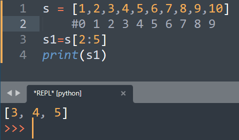
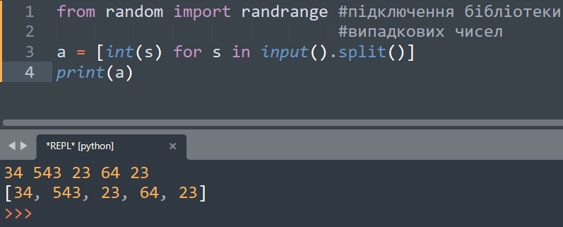
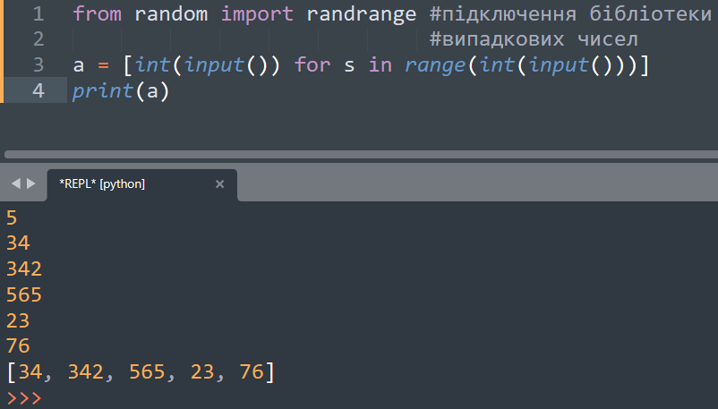

Зріз – це є форма синтаксичного аналізу, яка дозволяє витягувати фрагменти рядків (підрядки) за одну дію.
Використання зрізів дозволяє отримувати підрядки зручним способом.
Розрізняють два види операцій присвоювання зрізу рядка:
зрізи виду [:]. У цьому випадку вказуються дві межі, розділені символом : (двокрапка);
розширений зріз [::]. У цьому випадку вказуються три межі, розділені символом : (двокрапка).
У цьому випадку з рядка S витягується підрядок з позиції i до позиції j-1 включно.
При такій формі перший індекс не вказується.
Це означає, що витягується підрядок з початку рядка (додатнє зміщення 0) до позиції j-1.
При такій формі другий індекс відсутній.
Дана форма витягує елементи рядка починаючи з позиції i та до кінця рядка.
Така форма витягує елементи рядка починаючи з початку рядка та до кінця рядка.
Таким способом можна отримати поверхневу копію рядка,
який містить те ж значення але розміщений в іншій області пам’яті.
При такій формі витягуються всі елементи рядка починаючи з позиції i,
завершуючи позицією j-1 включно зі зміщенням (кроком) k.
Якщо k<0, то порядок меж i, j змінюється на протилежний.
У мові програмування Python є спеціальна синтаксична конструкція,
яка дозволяє за певними правилами створювати заповнені списки.
Такі конструкції називають генераторами списків.
Їх зручність полягає у більш короткому запису програмного коду,
ніж якби створювався список звичайним способом.
Приклад 1. Невідома кількість елементів
Приклад 2. Задана кількість елементів
